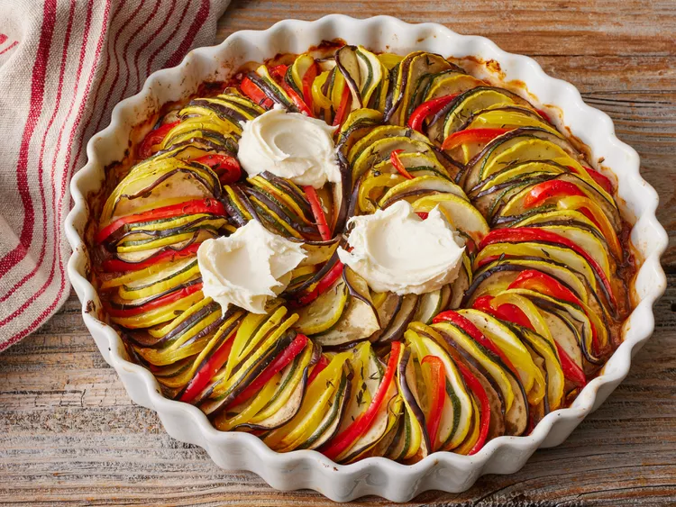

Ratatouille de Disney

Description
Esta receta de ratatouille de Disney prepara el delicioso plato que
aparece en la película del mismo nombre. Las verduras largas y estrechas
son las que mejor funcionan. Sirva con pan crujiente o sobre una cama de
arroz integral, cuscús o pasta.
Ingredients
- 1 lata (6 onzas) de pasta de tomate
- ½ cebolla picada
- ¼ taza de ajo picado
- ¾ taza de agua
- 4 cucharadas de aceite de oliva, divididas
- Sal y pimienta negra molida al gusto
- 1 berenjena pequeña , recortada y cortada en rodajas muy finas
- 1 calabacín, recortado y cortado en rodajas muy finas
- 1 Calabaza amarilla, recortada y cortada en rodajas muy finas
- 1 Pimiento rojo, sin corazón y cortado en rodajas muy finas
- 1 Pimiento amarillo, sin corazón y cortado en rodajas muy finas
- 1 cucharadita de hojas de tomillo fresco, o al gusto
- 3 cucharadas de queso mascarpone
Instrucciones
- Precaliente el horno a 375 grados F (190 grados C).
-
Extiende la pasta de tomate en el fondo de una fuente para horno
cuadrada de 25 cm. Espolvorea con cebolla y ajo.
-
Coloca rodajas alternadas de berenjena, calabacín, calabaza amarilla,
pimiento rojo y pimiento amarillo, comenzando por el borde exterior del
plato y avanzando de manera concéntrica hacia el centro.
-
Rocíe las verduras con las 3 cucharadas restantes de aceite de oliva;
sazone con sal y pimienta. Espolvoree con hojas de tomillo.
-
Hornee en el horno precalentado hasta que las verduras estén asadas y
tiernas, aproximadamente 45 minutos.
- Sirva con porciones de queso mascarpone.
VOLVER